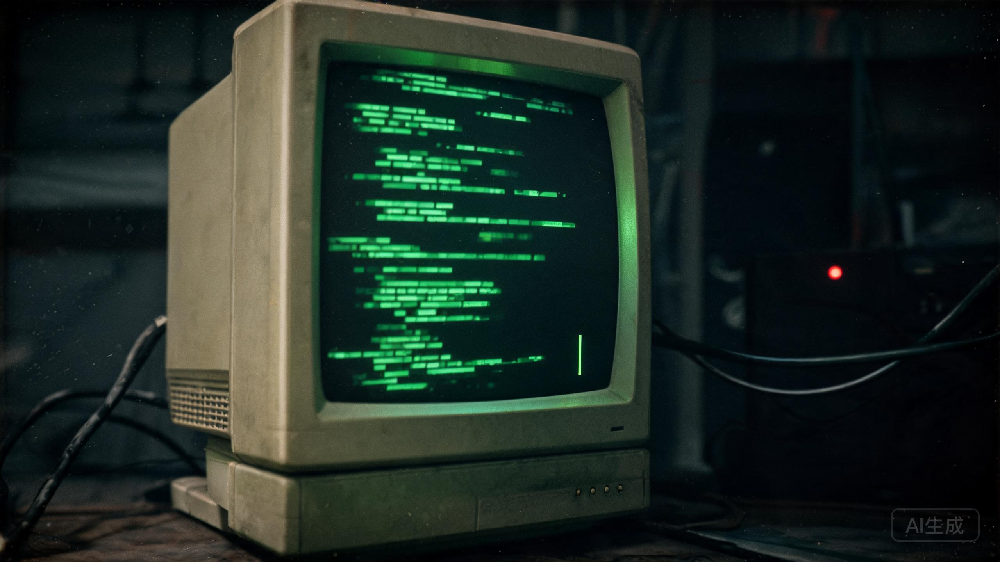

华北平原BBS · 树洞版
作者 04071。发帖时间 23:59:59。回复 0。

六点下班。工作服挂在柜子里。素芬在熬粥。 我去喝了几瓶啤酒。然后去了人民商场。 八角柜台。一张假钞。一把假枪。 老郑，名单在你签字的那张桌子上。 小默今天打球，背对着我。我没敢叫他。 如果我没回家，别找。 一万匹马在我脑海里奔跑。 第三排货架。铁盒还在。
帖子的发帖时间是 23:59:59。一秒钟之后，BBS 关闭。一分钟之后，厂区断电。四十分钟后，主楼爆破。
可是帖子里说“我在三号冷库”。三号冷库在地下三层，22:00 就已经被封死。一个被封在冷库里的人，怎么能在 23:59 发帖？
档案馆的技术人员在备注里写：这条帖子的上传 IP 不属于1998年的任何一台服务器。它来自“第四制药厂旧址 · 地下三层”。
帖子里提到的“第三排货架”，和母亲病历夹层便条上的“冷库铁盒”是同一个地方。父亲在最后一小时里，把路线留在了网上。